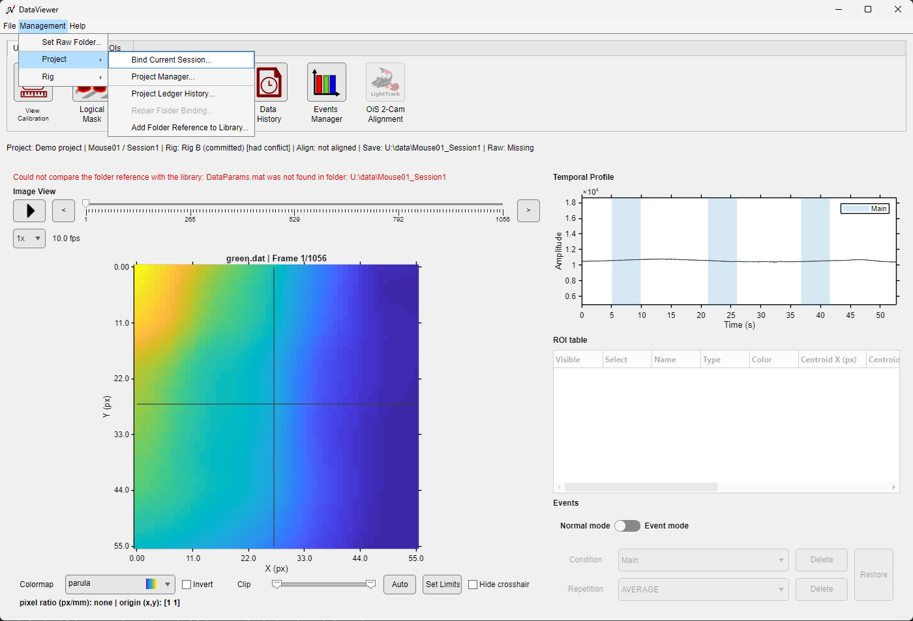
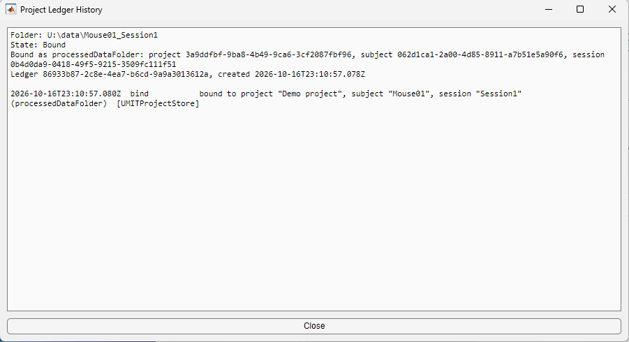

A project helps track recordings from one mouse—or a cohort of mice—throughout a study. It becomes especially useful for longitudinal experiments, where each subject has several sessions and those sessions should share a consistent image reference.
A project is optional. Every tool works on a Save Folder that is not bound to a project: DataViewer, Pipeline Manager, the Image Reference Manager (in standalone mode) and the Image Alignment Tool. A project adds a shared reference library per subject, so that every session of a subject can be aligned to the same image, and it keeps the recordings of a study organized.
Projects do not require special Save Folder names or a fixed data-folder tree. A bound Save Folder keeps a small project ledger, UMITProjectLedger.json, that points to the matching project, subject, and session and records the history of the binding. Moving or renaming a data folder therefore does not change the scientific identity of its session.
Project information is centralized under the umIT project root in the current user's profile. Display that root in MATLAB with:
getUmitFolder();Use the project-management interfaces.
Although the project root folder is accessible, use Project Manager and Project Binding Manager or the project-management classes to create, edit, move, bind, or repair project information. Avoid editing the files in the project root, or the project ledger of a Save Folder, by hand.
Project
├── Subject
│ ├── Session
│ └── Session
└── Subject
└── Session
Each level has its own descriptive metadata. A subject can also own a library of image references, so that all of its sessions can be aligned to the same spatial coordinates. Sessions do not store a rig: the Project Manager shows, read-only, the rig recorded in the session's Save Folder (see Folder rig), and a session whose folder has no rig is valid.
The context line below the toolbar shows the binding of the loaded folder, for example Project: Demo project | Mouse01 / Session1, or Project: Not assigned. Binding problems found when the data are loaded (for example a project that is not on this computer, or a link to a session that no longer exists) are reported in the status line, and Management > Project > Repair Folder Binding... offers the fitting repair.

| Command | Use |
|---|---|
| Bind Current Session... | Bind the loaded Save Folder to a new session of a project. See Project Binding Manager. |
| Project Manager... | Open the full project administration. |
| Project Ledger History... | Show the binding history of the folder (bind, rebind, unbind, orphan removal, fresh import), with the project, subject and session names recorded at each binding. |
| Repair Folder Binding... | Available only when the binding has a problem; see Binding states and repair. |
| Add Folder Reference to Library... | Offer the reference image the folder was aligned to to the subject's reference library; see Adding a folder's reference to the library. |
